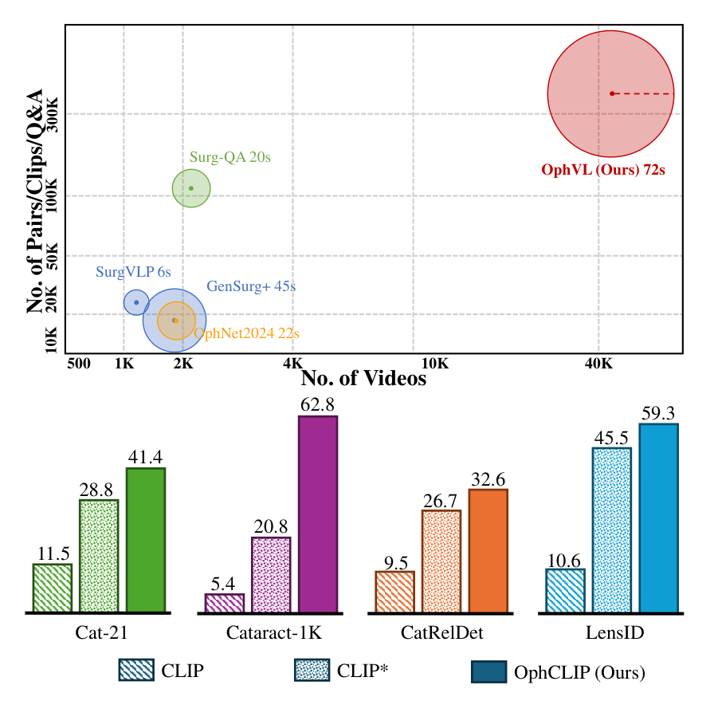
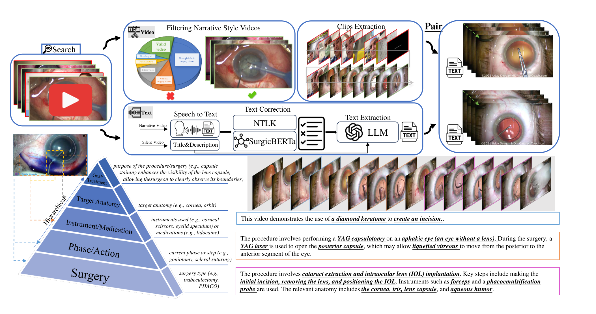
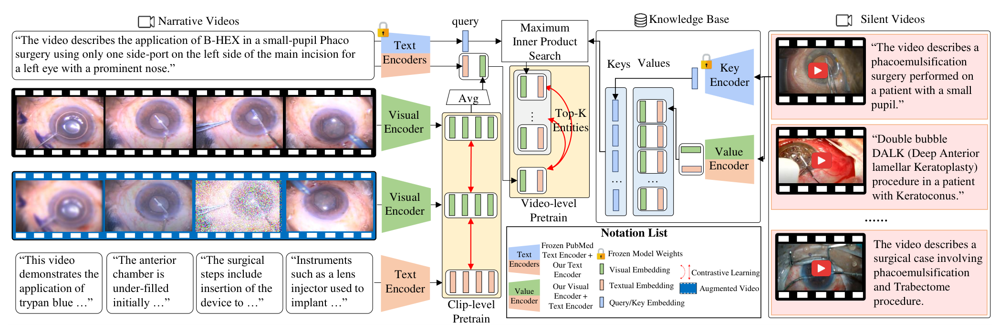
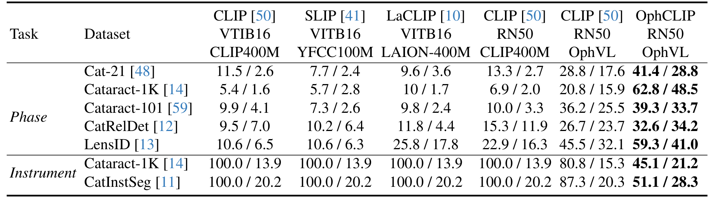
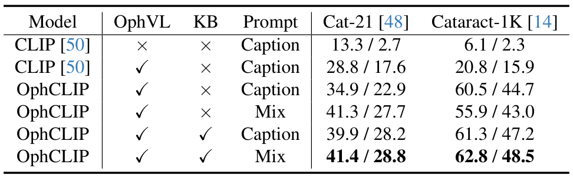
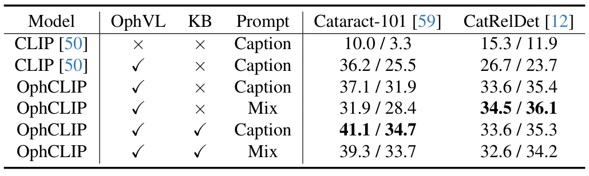

图文解读
1背景与动机
眼科手术视频很多，但能教模型看懂手术的配对数据很少。 单模态任务如阶段识别、器械分割已有进展，多模态表示学习仍少有人做。 作者指出障碍有专业术语、数据有限、需要专家标注，以及手术视频常长达数小时。
表 1 里眼科显微镜一栏只有本文的 OphVL 和人工标注的 OphNet2024。 网上还有大量没有解说的沉默视频，以往的数据集多半只用有解说的视频。

2核心观点速览
答案分三步：造数据，做两层对比学习，用标题检索沉默视频。 片段与解说对齐学细节，整段视频与标题对齐学流程，检索到的沉默视频嵌入作额外正样本。
头条结果是零样本阶段识别：Cat-21 达到 41.4%，Cataract-1K 达到 62.8%。 原版 CLIP 在两者上只有 11.5% 和 5.4%。
边界同样要记住：OphNet 的操作识别只有 7.1%，CaDIS 上器械误报率没有降低，知识库收益因数据集而异。
3数据：OphVL 怎么造出来
要点是用专家词表找频道，再用音频和画面把视频筛成有解说的真实手术。 作者与三位执业眼科医生整理出超过 3K 个术语，按频道搜索 YouTube，过滤后剩下约 100K 个视频。
画面过滤用 ResNet50 判断关键帧是否为眼科显微镜画面，超过 80% 即为有效视频。 音频过滤看人声占比，阈值 0.2，低于阈值的视频成为沉默视频，只保留标题和元数据。
文本用 Whisper Large-V3 转写，再经 Rake、SurgicBERTa 和大语言模型去噪，最后摘要成手术类型、阶段、器械、药物、解剖和目的。

数据有了，下一节看模型怎样使用它。
4方法：两层对比加沉默视频检索
核心设计是一套编码器、两层对比学习、一个检索知识库。 片段级用 InfoNCE 对齐片段与解说，并加一项自监督。 视频级把片段特征平均池化后与标题对齐。
检索用 PubMedBERT 编码标题，在记忆库的标题键上做最大内积搜索，训练时只取 1 个沉默视频。 取回的视觉和文本嵌入作为额外正样本，加入视频级损失。

5评测协议
所有评测都是帧级分类，不含时序建模。 零样本时冻结编码器，把类别名写成句子提示，用相似度分类。 阶段识别报 Accuracy 和 F1，器械识别报假阳性率 FPR（越低越好）和 mAP。
阶段识别提示有三种：关键词式、描述式（Caption）和两者合并的 Mix。 线性探测则冻结视觉编码器，训练线性 SVM，使用 10% 和 100% 的训练数据。
6结果说了什么
第一，领域数据本身就带来大幅提升。 Cataract-1K 上，原版 CLIP（RN50）为 6.9 / 2.0，在 OphVL 上预训练的 CLIP* 为 20.8 / 15.9。
第二，OphCLIP 在 CLIP* 之上继续提升，但幅度因数据集而异。 Cataract-1K 从 20.8 到 62.8，Cataract-101 只从 36.2 到 39.3。

第三，器械识别里基线 FPR 全是 100.0%，OphCLIP 降到 45.1% 和 51.1%。 补充表 8 显示基线各类召回率均为 100.0，即全部判为阳性。
线性探测中，Cat-21 上 OphCLIP 为 72.1 / 57.9，CLIP* 为 59.4 / 40.5。 Cataract-1K 的器械 F1 在 100% 数据下只有 11.6。
7为什么有效
我的判断：主要原因是领域匹配加文本分布对齐。 CLIP 到 CLIP* 的跳升最大，Cat-21 从 13.3 / 2.7 到 28.8 / 17.6。 论文自己也说要用描述式提示减小预训练与下游语料的文本差距。
层级训练在此基础上继续加分：不带知识库的 OphCLIP 在 Cataract-1K 上已到 60.5 / 44.7。 知识库再把 Caption 提示下的 F1 从 44.7 提到 47.2，Mix 提示下从 43.0 提到 48.5。

8结果没说明什么
第一，表 3 与正文自相矛盾。 正文把 OphNet-O 与 P 的数字对调。 CaDIS 上 OphCLIP 的 FPR 为 14.7 和 28.7，高于 CLIP 的 13.0 和 28.1，正文却说假阳性更低。
第二，知识库收益不稳定。 CatRelDet 上 Mix 提示加知识库为 32.6 / 34.2，低于不加的 34.5 / 36.1。
第三，没有证据表明模型理解了手术流程，因为评测只用帧级分类。 也没有多次种子的方差和显著性检验，小差异不应当作结论。

9怎么确认不是巧合
对三个核心论断，各问一次怀疑者会怎么说。
层级与检索是否超出数据集本身？部分成立。论文缺少同预算下只去掉层级或检索的对照。
沉默视频内容是否真的有用？未能区分。多出的正样本可能只是正则，论文没有随机替换检索结果的对照。
降低器械假阳性是否可靠？部分成立。Cataract-1K 与 CatInstSeg 上成立，CaDIS 上没有降低。
10复现要注意什么
先核对式 7：印出的分母只含取回的 K 个样本，K 又是 1。 若字面成立，这一项恒为常数，实际是否含批内负样本论文未说明。
训练设置：ResNet-50 和 BioClinicalBert，学习率 8e-5，温度 0.1，两项权重都是 0.5。 表 6 总 epoch 为 60，正文是 40 个 epoch 加交替训练，两者如何对应论文未说明。
数据的公开方式论文未说明，只给出项目主页。 规模口径也要核对：引言写 7.5K 小时，3.4 节写 9363 小时。